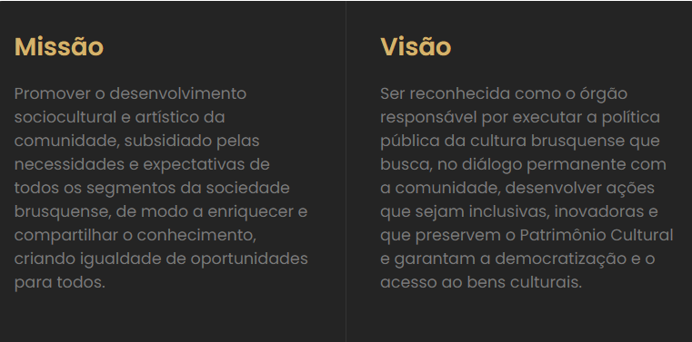

FUNDAÇÃO CULTURAL DE BRUSQUE
A Fundação Cultural de Brusque (FCB), pessoa jurídica de direito público, foi criada oficialmente em 18 de Janeiro de 2002 pela Lei Municipal nº 2580/2002.
Seu compromisso é Incentivar, difundir e promover a prática e o desenvolvimento da atividade cultural e artística no Município de Brusque, além de conservar, administrar e zelar pelo patrimônio cultural e artístico do Município de Brusque, dentre outras atividades elencadas na Lei Lei Municipal nº 2580/2002, a qual cria a Fundação Cultural de Brusque. Sendo assim, a Fundação Cultural de Brusque busca ser uma instituição reconhecida no âmbito Estadual pela sua excelência no estímulo à produção bem como a difusão cultural, e a valorização da memória, tendo autonomia para realizar suas ações de modo a democratizar o acesso à cultura no Município de Brusque.

A Fundação Cultural de Brusque também faz parte do Sistema Nacional de Cultura (SNC), possuindo assim: Plano Municipal
de Cultura, Fundo Municipal de Apoio à Cultura e Conselho Municipal de Cultura.
O Fundo Municipal de Apoio à Cultura: LEI Nº 2842/2005 de 27/05/2005 – Cuja finalidade consiste na prestação de apoio
financeiro a projetos que visem a fomentar e a estimular a produção artística e cultural do Município de Brusque.
O Conselho Municipal de Cultura: LEI Nº 3073/2008 de 04/03/2008 (alterado pela Lei nº 3664/2013) – O Conselho Municipal
de Cultura de Brusque, órgão colegiado de caráter formulador, normativo, deliberador e controlador da política pública
de cultura do município de Brusque, vinculado à Fundação Cultural de Brusque, tem suas atribuições, competências,
estrutura e funcionamento definidos nesta Lei.
Tem sob sua responsabilidade a Biblioteca Pública Municipal Ary Cabral, a Escola de Artes da Fundação Cultural de Brusque, o Setor de Patrimônio Histórico da Fundação Cultural de Brusque, além de ser composta pelos setores de projetos, eventos, setor administrativo e de RH.
Além disso, a Fundação Cultural de Brusque também fomenta o funcionamento de três casas museológicas que fazem a guarda e manutenção de arquivos, peças e documentos históricos do município de Brusque e Vale do Itajaí. São estas: Sociedade Amigos de Brusque (Museu Casa de Brusque), Instituto Aldo Krieger e Museu Arquidiocesano Dom Joaquim (Museu Azambuja).
Conhelho municipal de Cultura
- Presidente : Ivan Jasper
- Vice – Presidente: Rafaela Felipe Kohler
- 1° Secretária: Luana Franciele Fernandes
- Representantes e suplentes do Poder Público Municipal
- Representante chefe do poder executivo
- Titular: Ana Helena Boos
- Suplente: Herbert Tavares
- Titular: Ivan Jasper
- Suplente: Ademir José Jorge
- Representante Secretaria de Controle Interno
- Titular: Gilberto Raul Scherer
- Suplente: Daniel Felicio
- Representante da Secretaria de Educação
- Titular: Franciele Márcia Mayer
- Suplente: Maria Ivone Crespi Noldin
- Representante da Fundação Cultural
- Titular: Elisane Marcos
- Suplente: Jaqueline da Silva
- Representante da Biblioteca Pública Ary Cabral
- Titular: Igor Alves Balbinot
- Suplente: Cleber da Silva André
- Representante da Secretária de Comunicação Social
- Titular: José Carlos Paulini
- Representante da Secretária de Governo e Gestão Estratégica
- Titular: Rafael Scheibel de Andrade
- Representantes da Sociedade civil
- Representantes de entidades não governamentais com efetiva atuação na área cultural
- Titular: Franciele Fernandes
- Suplente: Elisiane Mafezolli
- Titular: Edelcio Cardoso
- Representante de Arte Cênica
- Titular: Mayara Luana Voltolini
- Suplente: Roner Lucad Becker da Luz
- Representante das Artes Visuais
- Titular: Rafaela Felipe Kohler
- Suplente: Ricardo Weschenfelder
- Representante da Literatura
- Titular: Luiz Gustavo Boscariol
- Representante dos Museus e Arquivos Históricos
- Titular: Angela Sikorski Santos
- Suplente: Larissa Fischer
- Representante da Arte Popular
- Titular: Silvio José da Luz
- Contato: conselho@fcbrusque.sc.gov.br